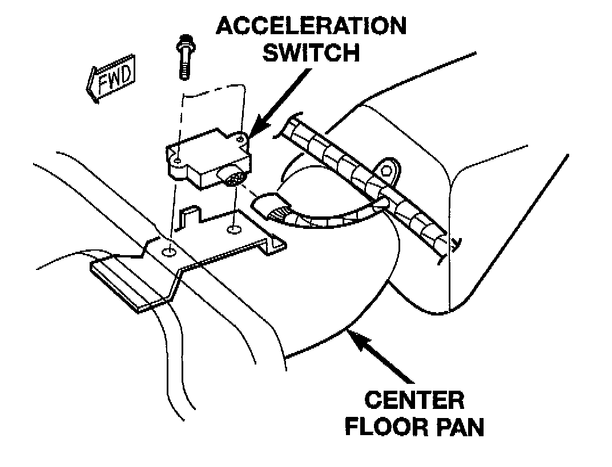
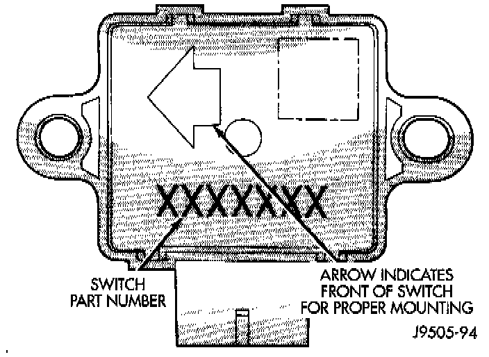

Acceleration/Deceleration Sensor: Service and Repair
REMOVAL1. Turn ignition switch to the OFF position.
2. Disconnect battery negative cable.
3. Fold the rear seat bottom assembly up for access to the switch.
Acceleration Switch Mounting:

4. Lift up the carpeting and disconnect switch harness.
5. Remove bolts attaching switch to bracket and remove the switch.
INSTALLATION
CAUTION: The mercury switch inside the acceleration switch will only function properly if the locating arrow is pointing to the front of the vehicle.

1. Note position of locating arrow on switch. Position switch so arrow faces forward.
2. Position switch in mounting bracket.
3. Install and tighten switch attaching bolts to 2-4 Nm (17-32 in. lbs.).
4. Connect harness to switch. Be sure harness connector is firmly seated.
5. Move rear seat back to normal position.
6. Connect battery negative cable.